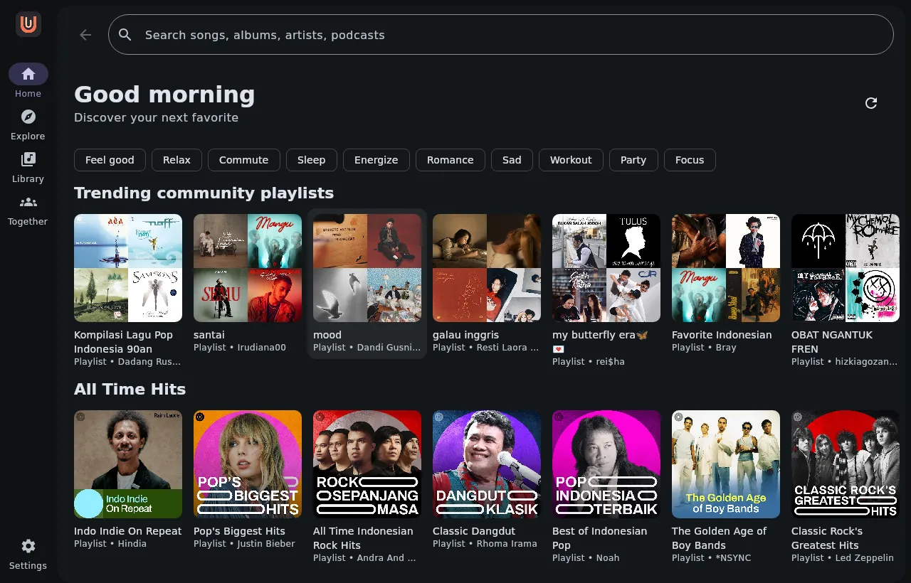
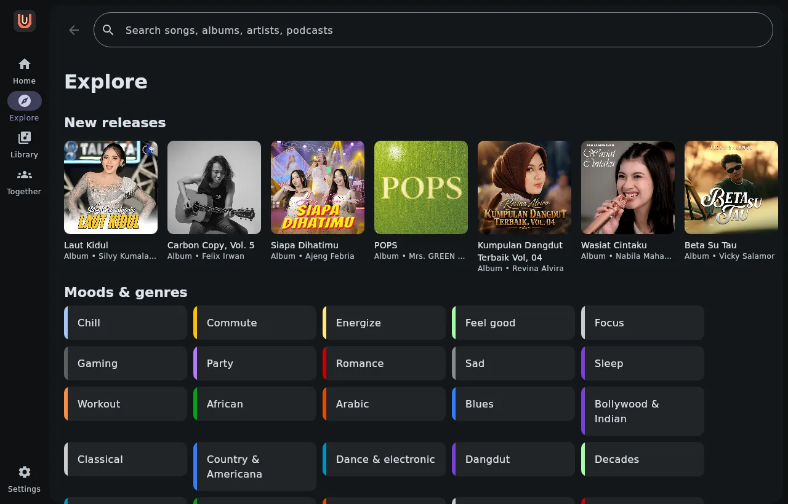
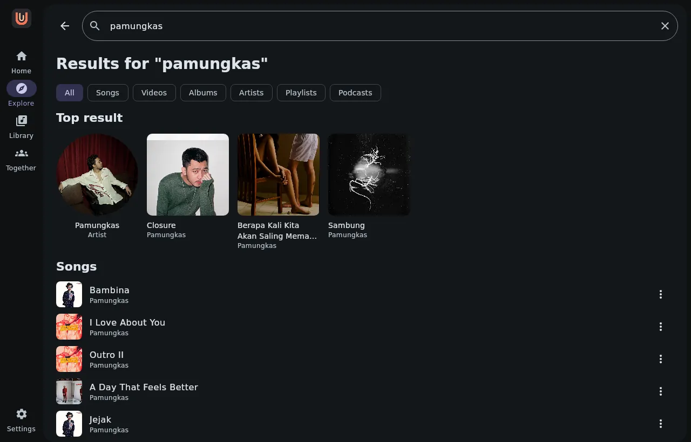
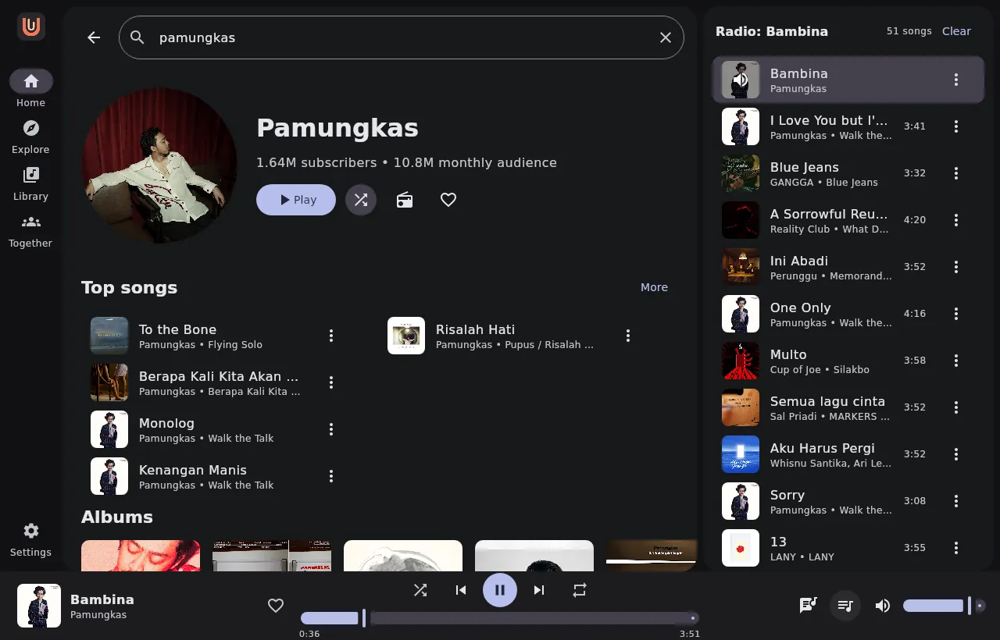
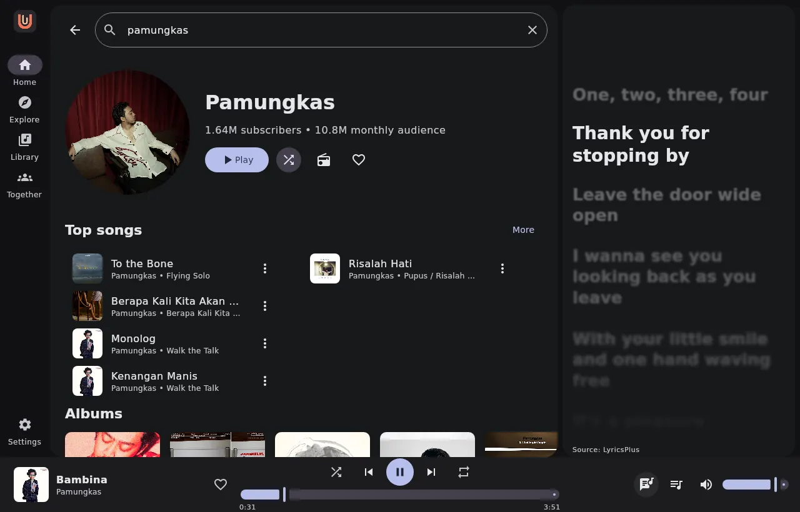

Rilis terbaru v1.5.8 · Windows · Linux · Android
Musik favoritmu.
Dengan caramu.
Satu aplikasi untuk YouTube Music di desktop dan ponsel. Automix membaurkan akhir sebuah lagu ke awal lagu berikutnya, lirik mengikuti setiap kata, dan semuanya tetap jalan saat offline.

Satu identitas · desktop · linux · android · web
Fitur
Bukan hanya mendengar.
Ikut merasakan.
Lirik mengikuti setiap kata yang dinyanyikan, gaya karaoke. Untuk bagian yang ingin kamu ulang lagi.
Automix baru
Akhir lagu membaur ke awal lagu berikutnya selama 2 detik. Tidak ada heningan, tidak ada potongan — dan sudah aktif sejak aplikasi pertama kali dibuka.
Offline, tetap jalan
Simpan lagu favorit. Tetap dengarkan di perjalanan, bahkan tanpa koneksi.
Listen Together
Buat room, bagikan kodenya, dan dengarkan musik secara sinkron bersama teman.
Equalizer & pitch
Equalizer 10 band dengan preset bawaan, plus pengatur kecepatan dan nada untuk setiap selera.
Tema dinamis
Warna aplikasi mengikuti artwork album. Dari terang ke gelap, selalu terasa pas.
Volume ternormalisasi
Setiap lagu disamakan loudness-nya, jadi lagu yang pelan tetap terdengar dan yang keras tidak membuat kaget.
Streaming 256 kbps AAC saat jaringan memungkinkan.
Level tiap lagu disamakan, maksimal -1.4 dB.
Peralihan antar lagu membaur, tanpa heningan.
Sisipkan rekomendasi setiap tiga lagu saat mengacak.
Tampilan asli aplikasi
Terlihat bagus.
Terasa lebih bagus.
Layar lebih luas. Musik lebih leluasa.





Mulai sekarang
Tekan play.
Jadi dirimu.
Gratis, tanpa akun, langsung dari GitHub Releases.
Android
APK langsung dari GitHub. Izinkan install dari sumber tak dikenal.
BeatPlay-1.3.0-android.apk Download AndroidHabis install: buka layar Premium → isi Server Premium dari admin → isi email → Cek status. Untuk akun YouTube sendiri: Settings → akun → Sign in (cukup sekali).